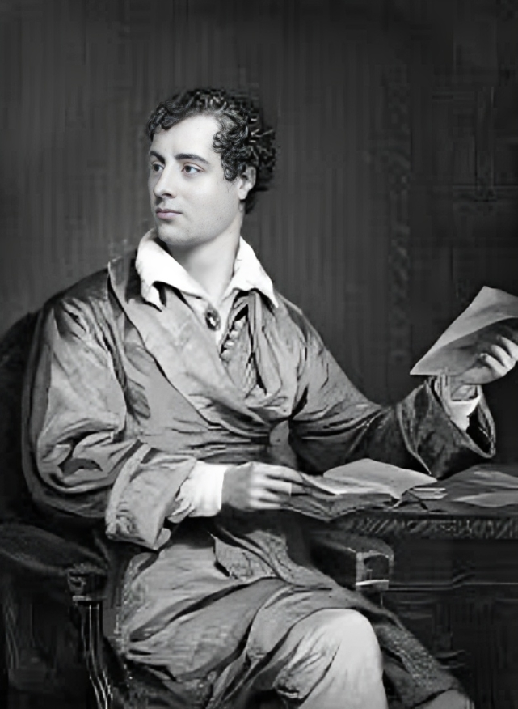
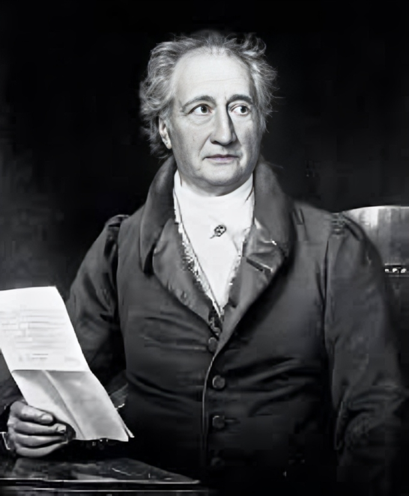
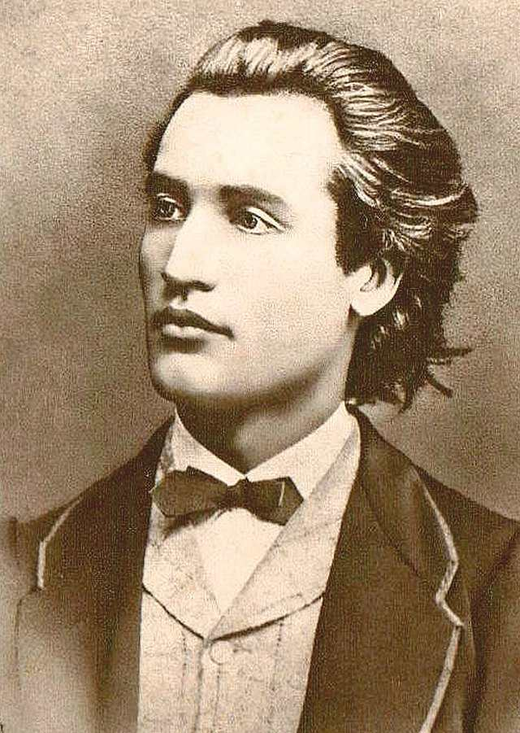

Studiu de caz: Influențele lui Byron si Goethe asupra lui Eminescu
în viziunea lui George Călinescu
George Călinescu, în monumentalul său studiu asupra literaturii române, ,,Istoria literaturii române de la origini până în prezent", l-a poziționat pe Mihai Eminescu în centrul culturii literare românești, considerându-l poetul național, dar și un exponent al romantismului european. În acest context, Călinescu a realizat o analiză comparativă între Eminescu și marii poeți romantici ai Europei, precum George Gordon Byron și Johann Wolfgang von Goethe, subliniind atât influențele pe care Eminescu le-a preluat din romantismul occidental, cât și originalitatea sa în interpretarea și adaptarea acestor influențe în spațiul cultural românesc.
Studiu de caz:
Influențele lui Byron asupra lui Eminescu
Călinescu identifică în opera lui Eminescu o afinitate cu spiritul byronian, în special în ceea ce privește temele legate de pesimism, solitudine, rebeliune împotriva normelor sociale, și aspirația către idealuri imposibile. De exemplu, în poezii precum ,,Luceafărul" sau ,,Scrisorile", există o prezență clară a unor personaje care se ridică deasupra mediului lor, asemenea eroilor byronieni, dar care se confruntă cu imposibilitatea de a atinge perfecțiunea.

Călinescu notează că Byron a influențat puternic întreaga generație romantică europeană, iar Eminescu a preluat de la el nu doar temele legate de natura umană, ci și un stil retoric înalt, cu imagini grandioase și simboluri complexe. Eminescu, asemenea lui Byron, și-a creat propriile personaje de tip titanesc, figuri izolate, dar care refuză să se conformeze lumii din jurul lor, rămânând în esență singure în univers.
Călinescu subliniază totuși că, în timp ce Byron adesea portretizează un erou revoltat care sfidează atât natura, cât și societatea, la Eminescu revolta se transformă într-o meditație filozofică asupra efemerității și zidului existențial dintre ideal și realitate. Personajele lui Eminescu nu mai sunt simple eroi romantici care se luptă cu forțele exterioare, ci devin simboluri ale condiției umane, adânc înrădăcinate în gândirea filozofică și în pesimismul profund al epocii.
Paralela cu Goethe și mitul faustian
Pe de altă parte, Călinescu face o comparație importantă între Mihai Eminescu și Johann Wolfgang von Goethe, explorând influențele faustiene din opera poetului român. Călinescu identifică în Luceafărul un model similar cu mitul lui Faust, dar adaptat la o viziune mai profund metafizică și mitologică. În timp ce Faust al lui Goethe caută cunoașterea și se angajează într-un pact cu diavolul pentru a obține puteri supranaturale, Hyperionul eminescian caută perfecțiunea și nemurirea, dar se confruntă cu o barieră insurmontabilă între lumea divină și cea umană.

Călinescu notează că, spre deosebire de Faust, care face un pact pentru putere și experiențe lumești, Hyperion caută o dimensiune spirituală superioară, iar refuzul său de a se implica în lumea umană sugerează o formă de resemnare cosmică. Eminescu nu urmărește simpla transpunere a mitului faustian, ci îl transformă într-o meditație profundă asupra condiției umane, a inaccesibilității idealului și a limitelor cunoașterii.
Astfel, comparativ cu Goethe, Călinescu arată că Eminescu își construiește propriul mit, în care tragismul nu provine din pactul cu forțele malefice, ci din imposibilitatea de a depăși limitele impuse de natură și destin. În această viziune, Călinescu subliniază că Hyperion devine un simbol al cunoașterii care transcende umanul, dar care, în același timp, rămâne separat de experiențele umane concrete.
Originalitatea lui Eminescu în contextul influențelor europene
Deși influențat de marii romantici europeni, Eminescu și-a păstrat originalitatea, consideră Călinescu. Prin prelucrarea acestor influențe, poetul român a creat o operă de o valoare inestimabilă, profund ancorată în specificul național, dar cu o deschidere evidentă către temele universale ale romantismului. Călinescu observă că, în timp ce Byron și Goethe au jucat un rol important în formarea viziunii lui Eminescu, el nu a copiat mecanic stilurile și temele acestora, ci le-a adaptat la sensibilitatea românească și la propria sa viziune filozofică.
